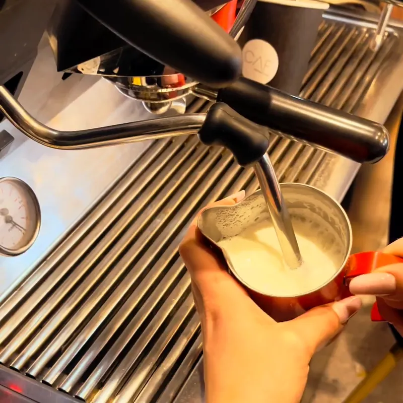

Coffee is a magical drink that awakens the senses and provides moments of relaxation or energy. Its varied aromas, from floral notes to chocolate accents, perfectly match any mood. Regardless of the preparation method, coffee remains a source of inspiration and an irreplaceable ritual in everyday life

Cafea bună, într-un loc făcut cu mâna.
Am pornit
de la lemn.
Înainte să fie cafenea, CAF a fost un atelier. La ArtLegno Porte&Scale se fac uși, scări și parchet, așa că, atunci când am deschis prima cafenea în Botoșani, am lucrat-o cu mâinile noastre.
La Dorohoi am ajuns pe 7 martie 2025. Barul, mesele și pereții au ieșit tot din atelier. Dacă te uiți de aproape, se vede în fibră.



Fiecare masă
are o poveste.
Barul, mesele și placarea pereților le-am făcut în același atelier. Am lăsat lemnul la vedere, pentru că ne place cum arată și cum se simte sub mână.
Meniu
Cafea
Cappuccino
14 leiEspresso cu lapte spumat fin. Merge oricând, dar dimineața parcă e mai bun.★ preferata casei
Espresso
9 leiScurt și intens, pentru o pauză rapidă.
Flat white
16 leiEspresso dublu și puțin lapte catifelat.
Băuturi reci
Mojito fără alcool
20 leiMentă, lime și multă gheață.★ preferata casei
Iced latte
17 leiEspresso și lapte rece, turnate peste gheață.
Fresh & limonade
Limonadă cu mentă
18 leiLămâie, mentă proaspătă și gheață.
Fresh de portocale
19 leiPortocale stoarse pe loc.
Patiserie & desert
Croissant
12 leiRumen pe dinafară, moale pe dinăuntru.★ preferata casei
Prăjitura zilei
19 leiSe schimbă des. Întreabă la bar ce avem azi.
Nimic pe filtrul ăsta. Încearcă altul.
Ce spun oaspeții.
A very beautiful cafe, with a warm and welcoming atmosphere. The coffee is delicious, and the staff is very kind and attentive to the customers. Everything is well organized. I highly recommend this place and I will always come back with pleasure!!♥️
A gorgeous cafe, with a modern and elegant design, where every detail is chosen with taste. The atmosphere is relaxing, the coffee is excellent, and the staff is very friendly. A place you will be happy to return to. I recommend it with all my heart!
An elegant and welcoming cafe. It is always very clean, and the products are fresh and of the highest quality. Always friendly staff. I recommend it with confidence to everyone who appreciates quality and excellent service!
The most elegant cafe in the area. And the coffee is excellent!
Great coffee and nice staff!
Great coffee
super ok
Ne vedem la CAF.
Dorohoi
- Adresă
- Bulevardul Victoriei, DorohoiVizavi de Penny
- Program
- Zilnic, 07:00–22:00
- Telefon
- +40 756 764 805
Botoșani
- Adresă
- Calea Națională nr. 61, Botoșani
- Program
- Program [DE COMPLETAT]
- Telefon
- Telefon [DE COMPLETAT]